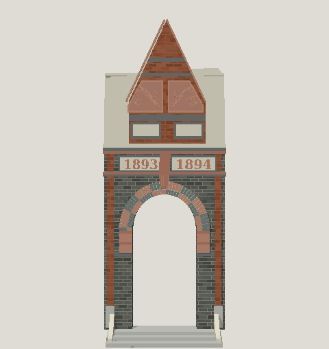
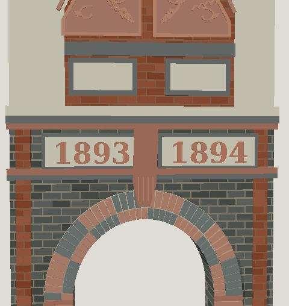

工部局西童女子学校砖券门（2014年所见）
2014年9月14日Fayhoo拍摄时，左牌读1893，右牌读1894，砖山花下方还有两块浅色素匾。高参88发表于2015年6月28日的走访照片图4、图6呈现相同的年份。2019年7月补记的修缮后图2中，左牌读1886，右牌仍读1894，上排可读PUBLIC与SCHOOL。

据2014年9月14日庭院照片复原的门面。
两块浅底凸字年牌位于双色砖券上方。下载近景模型 · 下载远景模型 · 2014年署名原照 · 2015年现场图与2019年修缮补记